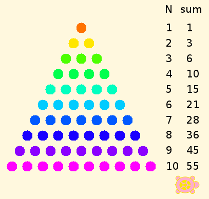
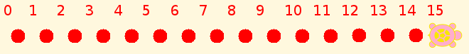

Figurate Numbers¶
Most of us are familiar with triangular numbers, such as the arrangement of ten bowling pins in a triangle,
or square numbers,
but we don’t necessarily know how their arithmetic works, or whether we can do the same with, say, pentagons. Pythogoras, the founder of Greek mathematics, is said to have discussed these figures and their relationships. We know that the triangle of 10 points, called the tetractys in Greek, was a central element in the Pythagorean religion.
Can we learn something by telling a turtle how to make these numbers? Let’s try.
Linear numbers¶
Before we get to triangles, squares, and so on, we need to have a few tools, such as those provided in the Counting tutorial, so that we can create figures and post notes about them. Then we can add a few more things.
Triangles¶
What should we add? How about making dots of different colors, and providing notes about how many of each, plus the running total? Easy-peasy. We just need to do the arithmetic to work out where to put everything.

The program to generate the triangular numbers takes up a lot of space, so I am putting it on another page.
A problem that TA can’t solve for us directly is the formula for triangular numbers. Gauss figured it out on his own as a child, but the rest of us need a hint, at least. Here is a big hint.
The area of a rectangle can be written Base × Height. The area of a right triangle is half the area of a rectangle with the same Base and Height. Can you do the rest?
Other Figurate Numbers¶
Two-sided polygons may or may not be allowed in a particular geometry, but they are not of interest here, because both sides are necessarily of the same length in Euclidean geometry and Lobachevskian/hyperbolic geometry, and of indeterminate length in Riemannian/elliptic geometry, rather like cutting a great circle on a sphere into two pieces.
